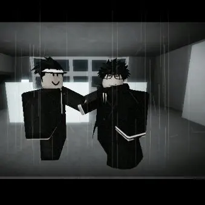
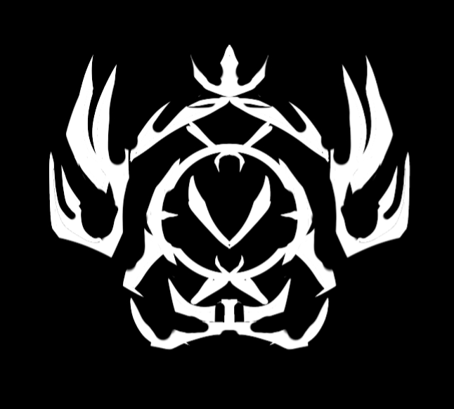
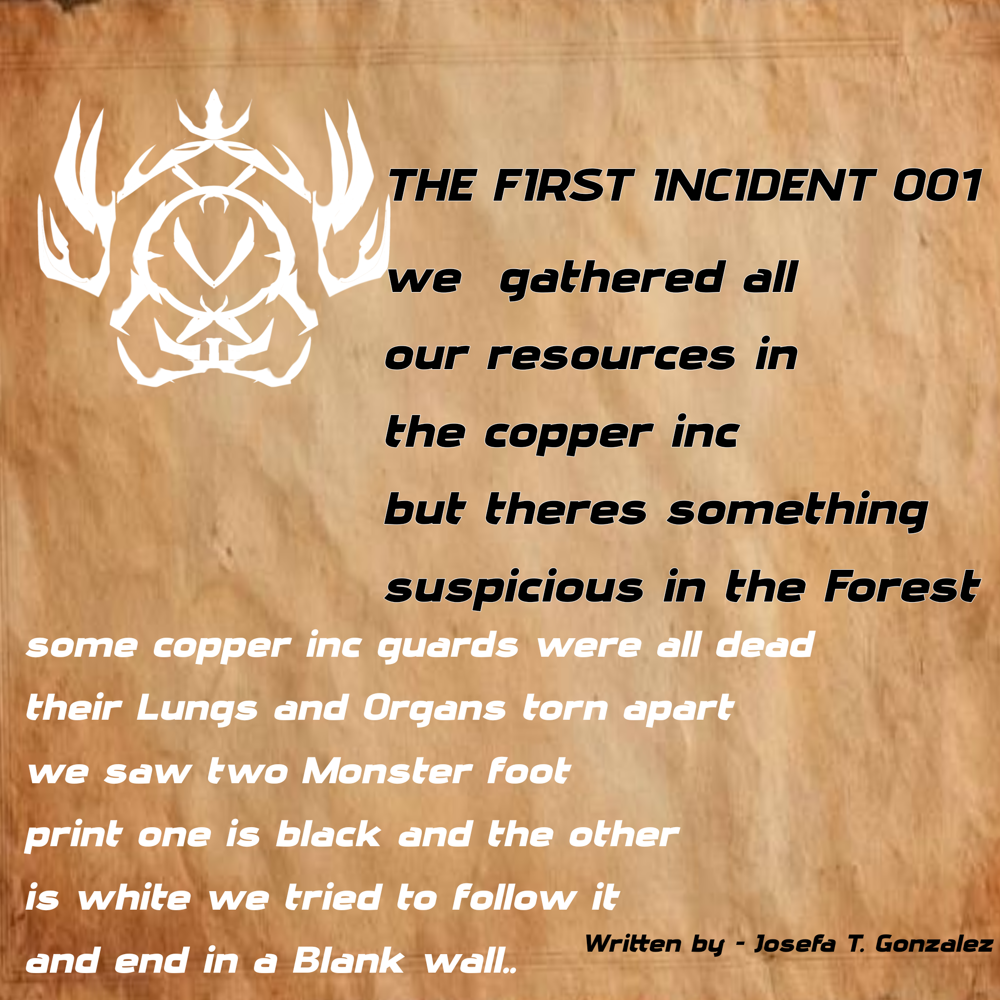

APPARENTLY THE FOUNDER OF VICE ENJIN TAKAMI DECIDED TO REMOVE VLACIER FROM THE WHITE ROOM AND EXPERIMENTED VLACIER COLDMAN BRAIN AND BRAINWASH HIM REMOVING ALL CRAZY MEMORIES VLACIER COLDMAN IS OFFICIALLY RETIRING FROM BEING A FOUNDER OF VICE AND DECIDED TO BE A ROBLOXIAN VICE AGENT AFTER HE REST FOR A FEW WEEKS

V̸͒̉̀͛.̴͛̄͂͒I̸̐̓̍́.̵̎̈́̾̓C̸͊̇͂͠.̴̔̿͋̇E was Made to Execute expose and report These Inappropriate Games and Behaviors of The Players. They are Low But Have a s[...]

we gathered all our resources in the copper inc but theres something suspicious in the Forest some copper inc guards were all dead their Lungs and Organs torn apart we saw two Monster foot print one is black and the other is white we tried to follow it and end in a Blank wall.. Written by - Josefa T. Gonzalez
